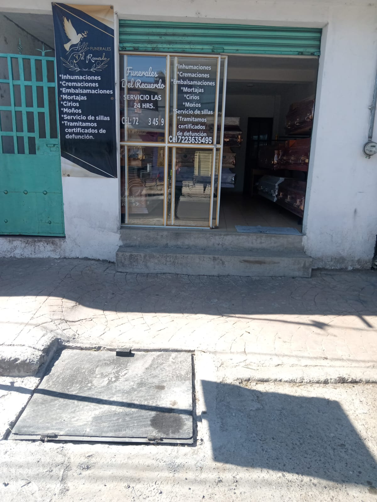

| ¿Quienes somos? | Funerarias | Servicios que ofrecemos | Contactos |
|---|---|---|---|
 |
 |  |
|
| En nuestra funeraria, entendemos que cada persona es única y merece un servicio funerario que se adapte a sus necesidades y preferencias individuales. Nuestro equipo está aquí para ayudarlo a planificar un servicio que honre la memoria de su ser querido. |
|||
Mision: Brindar servicios funerarios de calidad, empatia y respeto acompañando a las familias en momentos dificiles, brindar una experiencia de servicio fnerario excepcional, que honre a los fallecidos y alivie el dolor a sus seres queridos. |
|||
Visión: Ser la funeraria lider en[área geografíca] reconocida por su profesionalismo y compromiso con la comunidad y/o estado generando un impacto positivo. |
|||
Objetivo: Mejorar la experiencia del cliente, ampliar la oferta de servicio y promover la tranparencia en la industria funeraria, aumentar la visibilidad de la funeraria en linea, a través de la obtimización del sitio web y la creacion de contenido relevante. |
|||